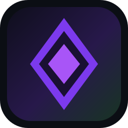

Conectar
Relay padrão do Obsidian Launcher (friend-server). Na internet use endereço wss:// com TLS.
Sala
Buscar mods (Modrinth)
Prévia de skin
Render via Crafatar. Para aplicar de verdade, use a aba Skins do launcher no PC.

Relay padrão do Obsidian Launcher (friend-server). Na internet use endereço wss:// com TLS.
Render via Crafatar. Para aplicar de verdade, use a aba Skins do launcher no PC.